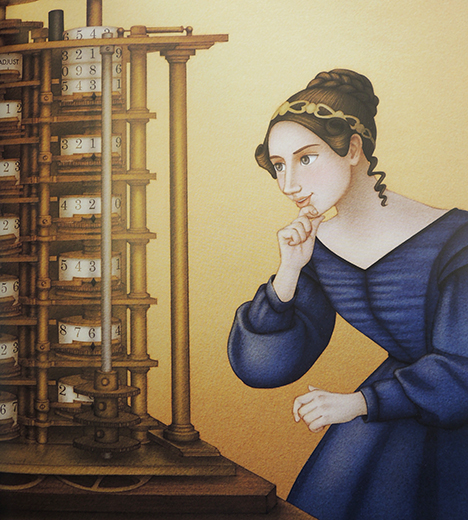

Maryam Bashir

Hello! I'm Maryam Bashir, an Undergraduate of BS Computer Science at Quaid-e-Azam University, Islamabad.
Education
Quaid-e-azam University, Loacted in Islamabad, is one of Pakistan's top-ranked universities known for its
academic excellence and research contributions in various fields.
Currently enrolled in BS CS program at Quaid-e-Azam University.
My learning journey here has been full of discovery, growth, and exciting challenges.
Done my FSC in Pre-Engineering with A+ grade.
Done my Matriculation with A+ grade.
Experience
Currently I am doing Internship at a Startup company Neutrawise, as a UI/UX Designer.
Skills
Some of my skills that i have learned so far are:
- Programming languages: C++
- Software Development: Object Oriented Progeramming(OOP), Data structures & Algorithms
- Design & multimedia: Thumbnail & Logo Design
- Tools & Platform: Visual studio code & MYSQL
Projects
Some of my projects that I have worked on are:
- Management System
- Database System
Interests
As I am enrolled in CS degree :(, therefore, I have a variety of interests that keep me engaged and somehow a
little bit relaxed :)
- Design:Designing very much excites me. I like Designing things.
- Art: I appreciate various forms of art, from painting to Sketching to Digital design.
- Technology: I love exploring new gadgets and software.
People Who Inspire Me

Malala Yousafzai
Malala is a Pakistani activist for female education and the youngest Nobel Prize laureate.
- Known for: courage
- Inspiration: Advocating
- Empathy and Compassion

Ada Lovelace
First computer programmer
- Known for: Visionary thinking
- Inspiration: Pioneering spirit
- Creativity and Innovation
Linus Torvalds
Creator of Linux kernel and Git version control system
- Known for: Technical brilliance
- Inspiration: Open-source advocacy
- Collaboration and Community Building
Hobbies :)
When I am not learning, these are some of the things I like to do for fun:
- Exploring: I enjoy fiction, non-fiction, and everything in between.
- Hiking: Being outdoors in nature is one of my favorite activities.
- Painting and Sketching are a must :)
Let's Connect Professionally on LinkedIn!
Maryam Bashir
Proflie Summary
A Snapshot of my academics and Areas of interest!
| Focus Area |
The Scoop🍦 |
| Name |
Maryam Bashir |
| Education |
BS Computer Science, Quaid-e-Azam University |
| F.Sc Pre-Engineering(A+ Grade) |
| Experience |
UI/UX Intern at Neutrawise |
| Skills💡 |
C++, OOP, Data Structures, Design tools🚀 |
| Projects📁 |
Management System, Database System |
| Interests & Hobbies🎨 |
Design and Technology |
| Thankyou for veiwing my proflie! |
Hey there!👋
I'm Maryam, writing code and collecting memes📸.
I sometimes talk to my computer and my phone like im hosting a podcast.
One of my goal is to conquer algorithms and still have enough time for Netflix and chill🍿.
If you see me talking to mysellf, don't worry, I'm debugging my life!🐞
Scroll down for more chaos.....or just to see the scrollbar in full action mode..hehe!🤭
Form
My Form